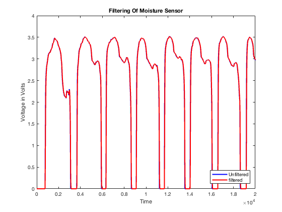
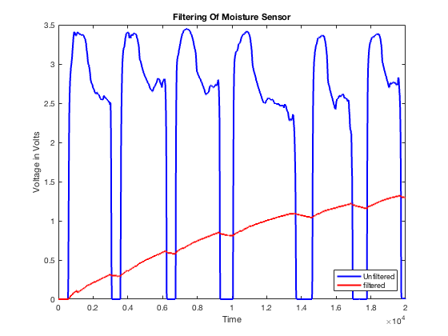
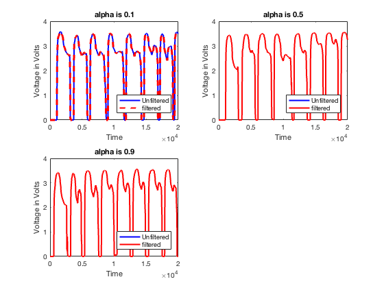

MyData = xlsread('1microfarad10kresistor'); figure(1) moisturevoltage = plot(MyData(:,1),MyData(:,2),'b','LineWidth',2); hold on; capacitorvoltage = plot(MyData(:,1),MyData(:,3),'r','LineWidth',2); title('Filtering Of Moisture Sensor'); xlabel('Time'); ylabel('Voltage in Volts'); legend('Unfiltered','filtered','location','southeast')
NewData = xlsread('2200microfarad_data'); figure(2) moisturevoltage2 = plot(NewData(:,1),NewData(:,2),'b','LineWidth',2); hold on; capacitorvoltage2 = plot(NewData(:,1),NewData(:,3),'r','LineWidth',2); title('Filtering Of Moisture Sensor'); xlabel('Time'); ylabel('Voltage in Volts'); legend('Unfiltered','filtered','location','southeast')
Conclusions: Based on the following graphs we can see minimal filtering done by the 1 microfarad capacitor and something else happening with the 2200 microfarad capacitor. I believe that there is an onboard filter for my moisture sensor which would mean that there are two parallel filters in the circuit that was created. I know it is possible to put a high pass and low pass in parallel to produce a band pass filter, but the effect of two lows with the large capacitor looks as if the capacitor may not be discharging during the length of test, at least that is my best guess.
alphalow = xlsread('alpha_is_0.1.xlsx'); alphamed = xlsread('alpha_is_0.5.xlsx'); alphahigh = xlsread('alpha_is_0.9.xlsx'); subplot(2,2,1) title('Digital Filtering Of Moisture Sensor'); digitalraw = plot(alphalow(:,1),alphalow(:,2),'b','LineWidth',2); hold on; digitalfiltering = plot(alphalow(:,1),alphalow(:,3),'--r','LineWidth',2); title('alpha is 0.1'); xlabel('Time'); ylabel('Voltage in Volts'); legend('Unfiltered','filtered','location','southeast') subplot(2,2,2) digitalraw2 = plot(alphamed(:,1),alphamed(:,2),'b','LineWidth',2); hold on; digitalfiltering2 = plot(alphamed(:,1),alphamed(:,3),'r','LineWidth',2); title('alpha is 0.5'); xlabel('Time'); ylabel('Voltage in Volts'); legend('Unfiltered','filtered','location','southeast') subplot(2,2,3) digitalraw3 = plot(alphahigh(:,1),alphahigh(:,2),'b','LineWidth',2); hold on; digitalfiltering3 = plot(alphahigh(:,1),alphahigh(:,3),'r','LineWidth',2); title('alpha is 0.9'); xlabel('Time'); ylabel('Voltage in Volts'); legend('Unfiltered','filtered','location','southeast')
When i applied the digital filter all three of my data sets had the same value for the unfiltered anddigitally filtered signal. I made the first graph dashed so that this can be seen to be true, the other two graphs do have two lines in them but the filtered data covers up the unfiltered data. There are no zoom in of the plots because of this, the values are the same in this case.